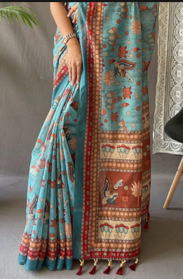

An eminent geographical indication, Kalamkari sarees find their home in the state of Andhra Pradesh. Kalamkari is a traditional Indian art form of hand-painted cotton fabric that originated in the state of Andhra Pradesh, India. The word "Kalamkari" comes from a Persian word where "kalam" means pen and "Kari" means craftsmanship. The art form uses natural dyes and involves 23 steps, and is known for its rich heritage and elegant designs.
Kalamkari originated in the modern-day states of Andhra Pradesh and Telangana several hundred years ago. It was first used to portray scenes from sacred texts such as the Mahabharata, Ramayana and Bhagavatam. These paintings were often displayed as decorative backdrops in temples, depicting the stories of deities.
The first step in creating Kalamkari is steeping it in astringents and buffalo milk and then drying it under the sun. Afterwards, the red, black, brown, and violet portions of the designs are outlined with a mordant and cloth are then placed in a bath of alizarin.
